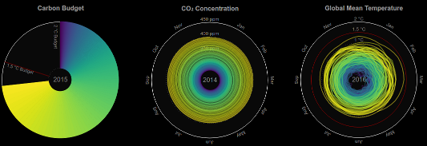

Climate Spirals

From Emissions To Global Warming
Climate Spirals Loop
Spirals
Carbon Budget
Concentration Spiral
Temperature Spiral
Budget & Temperature
Concentration & Temperature
Budget & Concentration
From Emissions To Global Warming
Spirals with Line Chart
Carbon Budget
Concentration Spiral
Temperature Spiral
Budget & Temperature
Concentration & Temperature
Budget & Concentration
Original Climate Spiral by
Ed Hawkins
(
Climate Lab Book
),
extended with Carbon Budget and Concentration Spiral by
Robert Gieseke
and
Malte Meinshausen
(
PRIMAP Group
,
Potsdam Institute for Climate Impact Research, Germany
&
Australian-German Climate & Energy College, The University of Melbourne, Australia
)
Data Processing
·
Source Code